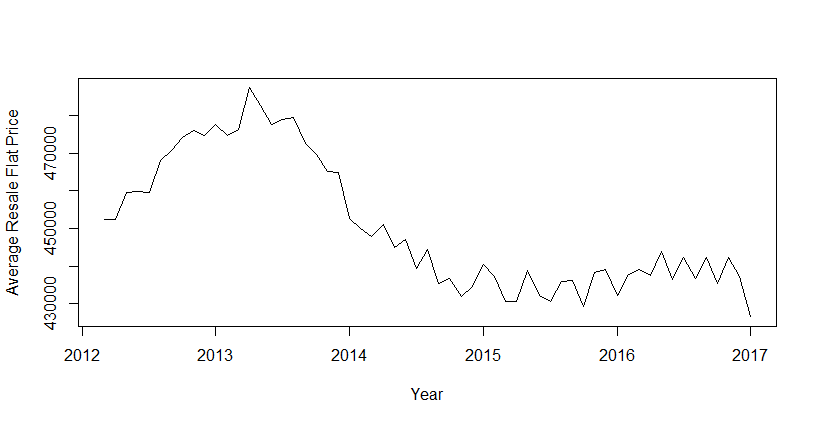
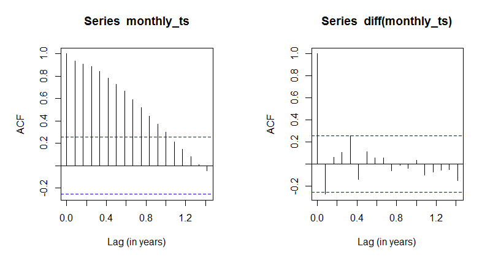
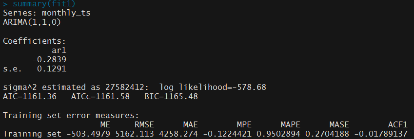
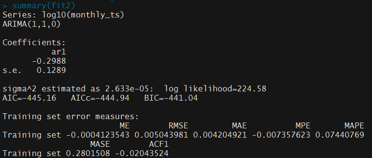
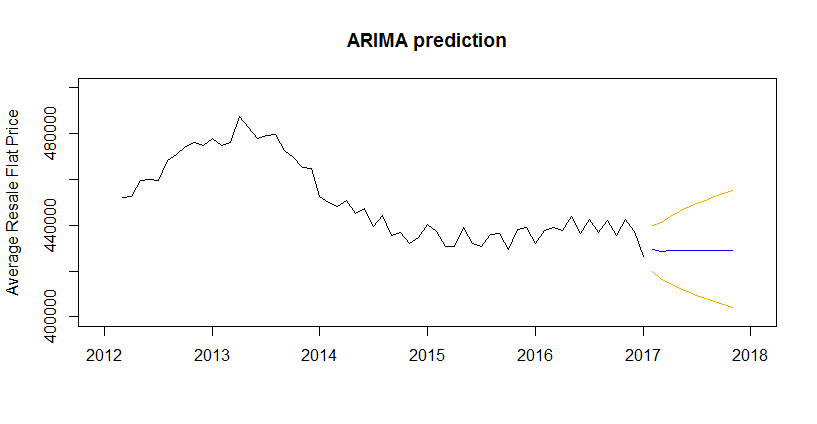
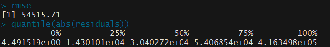
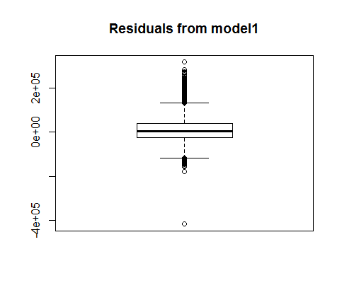

Quick analysis and prediction of HDB resale flat prices
I thought I’d do a quick analysis of HDB resale flat price data, one of the few datasets on data.gov.sg that is raw enough for analysis.
The data
The dataset I used is the HDB Resale Flat Prices dataset, available here. The data used in this analysis is from March 2012 onwards.
There are 10 variables:
- month (of transaction)
- town
- flat type
- flat model
- block
- street name
- storey range
- floor area (in sq metres)
- lease commence date
- resale price
Time series analysis using ARIMA
The data was first read in as a dataframe called ‘resale’. Then it was aggregated by calculating the mean resale price of flats sold for each month, and plotted.
# plot mean resale flat price
monthly = aggregate(resale_price~month, FUN=mean, data=resale)
monthly_ts = ts(monthly$resale_price,start = c(2012,3), frequency=12)
plot(monthly_ts, xlab="Year", ylab="Average Resale Flat Price")

As seen from the above plot, flat prices were generally growing until the slew of cooling measures in 2013 brought the mean resale flat price down. Towards the end, prices seem stable.
For most of the graph, prices were on a downward trend which indicates a non-stationary series. To check, these are the ACF plots with and without differencing. It is clear from the plot on the left that the series is non-stationary (because ACF decreases slowly), and that first differencing quickly fixes this problem.
# acf plots
par(mfrow = c(1,2),pty="s")
acf(monthly_ts, xlab="Lag (in years)")
acf(diff(monthly_ts), xlab="Lag (in years)")

Not too sure how variance stabilization would affect this, so I tried ARIMA before and after log transformation of the series. The results were drastically different. AIC, BIC and the various error measures all decreased, so clearly the log transformation helped a lot in making the series stationary on variance.
require(forecast)
fit1 = auto.arima(monthly_ts, approximation=F,trace=F) # not so good
summary(fit1)
fit2 = auto.arima(log10(monthly_ts), approximation=F,trace=F) # much better
summary(fit2)


Lastly, I used fit2 to plot a prediction (and its 95% confidence intervals) of the mean resale flat prices for the next 10 months. It’s not the most informative, but it’s something.
prediction = predict(fit2, n.ahead=10)
plot(monthly_ts, type ="l", xlab="", ylab = "Average Resale Flat Price", xlim = c(2012,2018), ylim = c(400000,500000), main="ARIMA prediction")
lines(10^(prediction$pred),col="blue")
lines(10^(prediction$pred+2*prediction$se),col="orange")
lines(10^(prediction$pred-2*prediction$se),col="orange")

Regression analysis
The broad historical analysis above isn’t the most detailed predictor of resale flat price. Previously, in taking just the mean price, we assumed that the proportion of each type/model/age/etc. of flat is roughly the same every month.
However, bigger, newer flats in mature estates tend to command higher prices, and it could skew our analysis if the proportions of these different features vary widely from month to month. Doing a regression analysis with these additional variables would probably give us a more useful prediction.
To avoid overfitting, I decided to go with a straightforward linear regression. However, I still wanted to keep the element of time in there, so I created an additional variable ‘t’. t starts from time 1, which represents March 2012, and increases by 1 each month.
In addition, I wanted to see how well the linear regression worked in predicting flat price, so the original dataset was split into a training and test set. The test set is the last 6 months of the original dataset, from August 2016 to January 2017, and the training set includes everything before.
model1 = lm(resale_price~t+lease_commence_date+flat_model+floor_area_sqm+storey_range+flat_type+town, data=training_data)
summary(model1)
The summary is a bit too long to post here due to the many categorical variables, but the regression turned out well, with an adjusted R-squared value of 0.8577.
While attempting to perform a prediction on the testing data, I found that it had a row with flat_model 2-room, which does not appear anywhere else, including in the training data. It had to be removed as it cannot be accurately predicted.
#remove rows from testing data that is not accounted for in original model
testing_data=testing_data[!(testing_data$flat_model == "2-room"), ]
results = predict(model1, testing_data)
#validation
residuals=testing_data$resale_price-results
mse = mean(residuals^2)
rmse = sqrt(mse)
quantile(abs(residuals))
boxplot(residuals, main ="Residuals from model1")
 
While the root MSE was about 55 000, the interquartile range for (absolute) residuals was actually between about 14 300 and 54 100. The boxplot shows the reason why, with more outliers above the interquartile range than below. As the mean price we observed earlier was about $450 000, predictions from our model are generally off by 10% or less, which I think is decent for a quick analysis.
Future analysis
I previously made use of this dataset in the 2016 Microsoft Data Science Student Challenge, where my team based our predictions on spatial analysis of nearby facilities such as schools and shopping malls. It takes a while to reverse geocode all the addresses, but perhaps I’ll continue this line of analysis in the future.